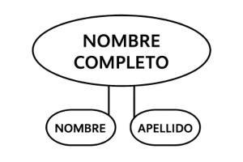
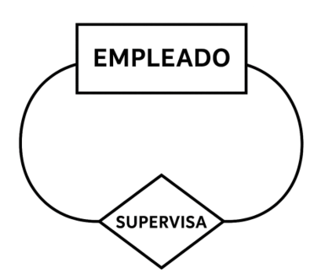
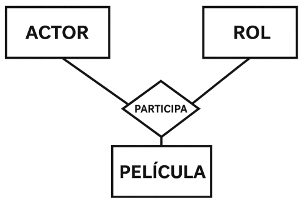

Web Applications and the Cloud
Understanding the evolution of the web and the power of cloud-based applications
1. Diseño lógico
1.1 ¿Qué es el diseño lógico?
El diseño lógico es una fase fundamental en el proceso de construcción de una base de datos. Su objetivo principal es traducir los requerimientos recogidos durante el análisis en una estructura de datos clara, coherente y normalizada, independientemente del sistema de gestión de bases de datos (SGBD) que se vaya a utilizar posteriormente.
A diferencia del diseño físico, que se centra en la implementación y optimización del almacenamiento en disco, el diseño lógico trabaja a un nivel de abstracción superior. Aquí se definen entidades, atributos, relaciones y restricciones que organizan la información de forma estructurada, comprensible y útil para los usuarios y los desarrolladores.
Una vez completado este diseño, se podrá transformar en un esquema relacional y posteriormente implementar en un SGBD concreto como MySQL, Oracle o PostgreSQL.
Consejo: Antes de comenzar con el diseño lógico, asegúrate de haber comprendido bien las necesidades de la aplicación y haber recogido todos los requisitos. Un error en esta fase puede repercutir en todo el desarrollo posterior.
Características clave del diseño lógico:
- Independencia del sistema gestor (SGBD).
- Representación detallada de la información: entidades, atributos y relaciones.
- Aplicación de restricciones de integridad (por ejemplo, claves primarias y foráneas).
- Preparación para su conversión al modelo relacional.
- Base para realizar la normalización de datos.
En definitiva, el diseño lógico es la etapa en la que se toma lo conceptual y se transforma en algo técnico, pero todavía independiente de la tecnología concreta. Es un puente entre la abstracción del modelo Entidad-Relación y la implementación real de una base de datos.
1.2 El modelo Entidad-Relación (E/R)
Antes de implementar una base de datos, es esencial realizar un buen diseño conceptual que nos permita comprender la estructura de la información. El modelo Entidad-Relación (E/R), propuesto por Peter Chen en 1976, se utiliza como herramienta visual para representar de forma lógica y coherente los datos que serán almacenados. Gracias a él, es posible identificar claramente qué información se va a almacenar, cómo se relacionan los distintos elementos y cuáles son las restricciones que debemos tener en cuenta.
Este modelo es uno de los pasos fundamentales del diseño de una base de datos, ya que actúa como puente entre el mundo real (la realidad que queremos representar) y el modelo lógico que más adelante se convertirá en código SQL.
Consejo: No subestimes el diseño conceptual. Un buen diagrama E/R reduce errores, mejora la calidad del software y facilita la colaboración entre técnicos y usuarios.
4.1 ¿Qué elementos componen un modelo E/R?
El modelo Entidad-Relación (E/R) es una representación gráfica que permite visualizar de forma estructurada cómo se relacionan los datos en un sistema. Este modelo está compuesto por distintos elementos fundamentales: entidades, atributos, relaciones y cardinalidades.
Entidades
Las entidades representan objetos del mundo real que tienen existencia propia dentro del sistema. Pueden tener diferentes tipos:
- Entidad fuerte: Aquella que tiene existencia independiente, es decir, no depende de ninguna otra entidad para existir. Suele tener su propia clave primaria.

- Entidad débil: Es una entidad que depende de otra para existir. No tiene clave primaria propia, sino que se identifica a través de una entidad fuerte asociada y una clave parcial.

Atributos
Los atributos son las propiedades o características que describen a una entidad o a una relación. Según su naturaleza, se clasifican en:
-
Simples: No se pueden subdividir. Ejemplo: edad.
Figura 3: Representación de un atributo simple
-
Compuestos: Pueden descomponerse en otros atributos más simples. Ejemplo: nombre completo → nombre + apellidos.
Figura 4: Representación de un atributo compuesto
-
Multivaluados: Pueden contener más de un valor para una sola entidad. Ejemplo: teléfonos.
Figura 5: Representación de un atributo multivaluado
-
Derivados: No se almacenan directamente, sino que se calculan a partir de otros. Ejemplo: edad a partir de la fecha de nacimiento.
Figura 6: Representación de un atributo derivado
Relaciones
Las relaciones representan asociaciones entre dos o más entidades. Por ejemplo, un Profesor imparte una Asignatura. Dependiendo del número de entidades involucradas, las relaciones se clasifican en:
-
Binarias: Entre dos entidades.
Figura 7: Representación de una relación binaria
-
Reflexivas: Una entidad se relaciona consigo misma. Ejemplo: Empleado supervisa a Empleado.
Figura 8: Representación de una relación reflexiva
-
Ternarias (o n-arias): Involucran tres o más entidades.
Figura 9: Representación de una relación ternaria
- Agregación: Permite tratar una relación como una entidad para asociarla con otra.
Cardinalidad
La cardinalidad indica el número de ocurrencias de una entidad que pueden estar asociadas con otra entidad dentro de una relación. Los tipos más comunes son:
- 1:1 (uno a uno): Un registro de una entidad se asocia con solo uno de otra entidad. Ejemplo: Persona – DNI.
- 1:N (uno a muchos): Un registro de una entidad se asocia con varios de otra. Ejemplo: Cliente – Facturas.
- N:M (muchos a muchos): Varios registros de una entidad pueden relacionarse con varios de otra. Ejemplo: Alumnos – Asignaturas.
Otros elementos importantes
- Claves primarias (Identificadores): Atributo(s) que permiten identificar de forma única cada instancia de una entidad. Son fundamentales para garantizar la integridad de los datos.
- Entidades débiles: No tienen una clave primaria por sí mismas y dependen de una entidad fuerte. Deben estar relacionadas mediante una relación identificadora.
-
Jerarquías (Especialización/Generalización): Se utilizan para modelar subtipos. Por ejemplo,
una entidad Empleado puede especializarse en Médico y Enfermero. Se deben indicar las condiciones:
- ¿Es disjunta o solapada?
- ¿Es total o parcial?
- Relaciones reflexivas: Una entidad se relaciona consigo misma. Ejemplo: un Empleado puede ser supervisor de otro Empleado.
Errores comunes al diseñar un E/R
- Confundir atributos con entidades o relaciones.
- No definir correctamente la cardinalidad.
- Omitir atributos clave o necesarios.
- Diseñar relaciones redundantes o innecesarias.
¿Cómo se representa visualmente?
En los diagramas E/R:
- Las entidades se dibujan como rectángulos.
- Los atributos como elipses conectadas a su entidad.
- Las relaciones como rombos entre las entidades participantes.
- Las especializaciones como líneas con triángulos apuntando al subtipo.
Recomendación: Siempre empieza tu modelo conceptual con una buena lluvia de ideas sobre los objetos clave del sistema y sus relaciones. El diagrama crecerá de forma orgánica si las relaciones están bien pensadas.
Ejemplo de diagrama E/R
En este ejemplo se representan las entidades principales de un sistema hospitalario y sus relaciones clave: